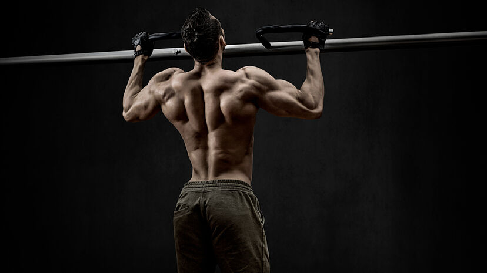
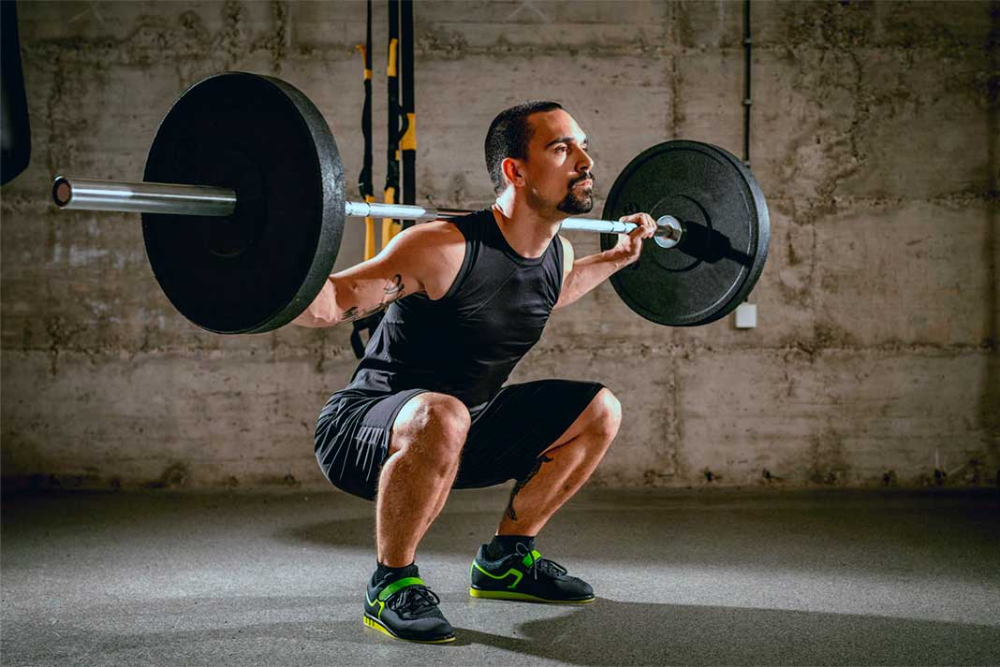

Press de banca: Ideal para trabajar el pecho, los tríceps y los hombros.

Dominadas: Fortalece la espalda, los bíceps y el core.
Sentadillas: Mejora la fuerza en las piernas y glúteos, además de trabajar el equilibrio.
Peso muerto: Excelente para trabajar la cadena posterior y aumentar la fuerza total.